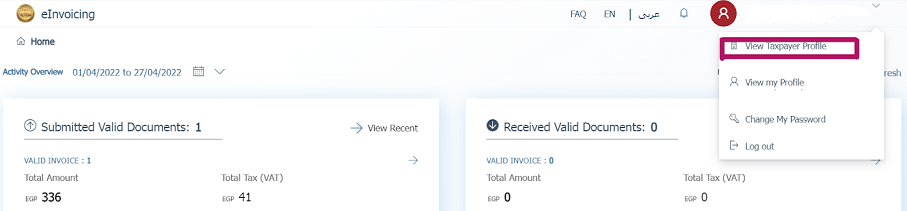

Egypt¶
Installation¶
Install the following modules to get all the features of the Egyptian localization:
Name |
Technical name |
Description |
|---|---|---|
Egypt - Accounting |
|
Default fiscal localization package |
Egyptian E-invoice Integration |
|
Egyptian e-invoicing¶
Odoo is compliant with the Egyptian Tax Authority (ETA) e-invoicing requirements.
Important
Egyptian e-invoicing is available from Odoo 15.0. If needed, upgrade your database.
See also
/administration/upgrade
Register Odoo on your ETA portal¶
You must register your Odoo ERP system on your ETA portal to get your API credentials. You need these codes to configure your Odoo Accounting app.
Access your company profile on the ETA portal by clicking on View Taxpayer Profile.
Next, go to the Representatives section and then click on Register ERP.
Fill out the ERP Name (e.g., Odoo) and leave the other fields empty.

Once successfully registered, the website displays your API credentials:
Client ID
Client Secret 1
Client Secret 2
Note
ETA should give you a username and a password to access their online portal.
Ask ETA to provide you with preproduction portal access as well.
These codes are confidential and should be stored safely.
Configuration on Odoo¶
To connect your Odoo database to your ETA portal account, go to , and set the ETA Client ID and ETA Secret that you retrieved when you registered Odoo on your ETA portal. Set an invoicing threshold if needed.

Important
Test on your preproduction portal before starting to issue real invoices on the production ETA portal.
Credentials for preproduction and production environments are different. Make sure to update them on Odoo when you move from one environment to another.
If not done yet, fill out your company details with your company’s full address, country, and Tax ID.
ETA codes¶
E-invoicing works with a set of codes provided by the ETA. You can use the ETA documentation to code your business attributes.
Most of these codes are handled automatically by Odoo, provided that your branches, customers, and products are correctly configured.
Company Information:
Company Tax ID
- Branch IDIf you have only one branch, use
0as the branch code. Activity type Code
Other Information:
- Product CodesYour company’s products should be coded and matched with their GS1 or EGS codes.
- Tax CodesMost of the taxes codes are already configured on Odoo in the ETA Code (Egypt) field. We advise you to make sure these codes match your company’s taxes.
Branches¶
Create a contact and a journal for each branch of your company and configure its ETA settings.
To do so, go to , then click on Create.
Name the journal according to your company’s branch and set the Type as Sales. Next, open the tab and fill out the Egyptian ETA settings section:
In the Branch field, select the branch’s contact or create it.
Set the ETA Activity Code.
Set the ETA Branch ID (use
0if you have one branch only).

Important
The contact selected in the Branch field must be set as a Company (not as an Individual), and the Address and Tax ID fields must be filled out.
Customers¶
Make sure your customers’ contact forms are correctly filled out so your e-invoices are valid:
contact type: Individual: or Company:
Country:
Tax ID: Tax ID or Company registry for companies. National ID for individuals.
Note
You can edit your customers’ contact forms by going to .
Products¶
Make sure your products are correctly configured so your e-invoices are valid:
Product Type: storable products, consumables, or services.
Unit of Measure: if you also use Odoo Inventory and have enabled Units of Measure.
Barcode: GS1 or EGS barcode
ETA Item code (under the tab): if the barcode doesn’t match your ETA item code.
Note
You can edit your products by going to .
USB authentication¶
Each person who needs to electronically sign invoices needs a specific USB key to authenticate and send invoices to the ETA portal through an ERP.
Note
You can contact the ETA or Egypt Trust to get these USB keys.
Install Odoo as a local proxy on your computer¶
An Odoo local server works as a bridge between your computer and your Odoo database hosted online.
Download the Odoo Community installer from the page https://www.odoo.com/page/download and start the installation on your computer.
Select Local Proxy Mode as the type of install.

Note
This installation of Odoo only works as a server and does not install any Odoo apps on your computer.
Once the installation is complete, the installer displays your access token for the Odoo Local Proxy. Copy the token and save it in a safe place for later use.
See also
../../../administration/on_premise
Configure the USB key¶
Once the local proxy server is installed on your computer, you can link it with your Odoo database.
Go to and click on Create.
Input a Company name, the ETA USB Pin given to you by your USB key provider, and the Access Token provided at the end of the local proxy installation, then click on Save.
Click on Get certificate.